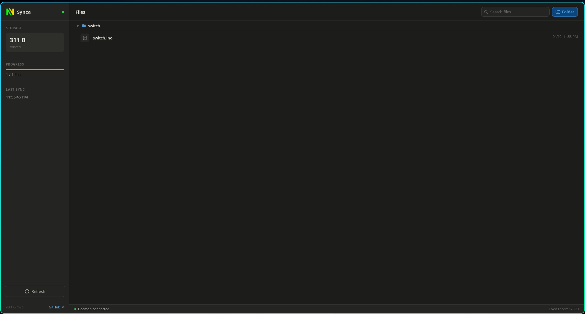
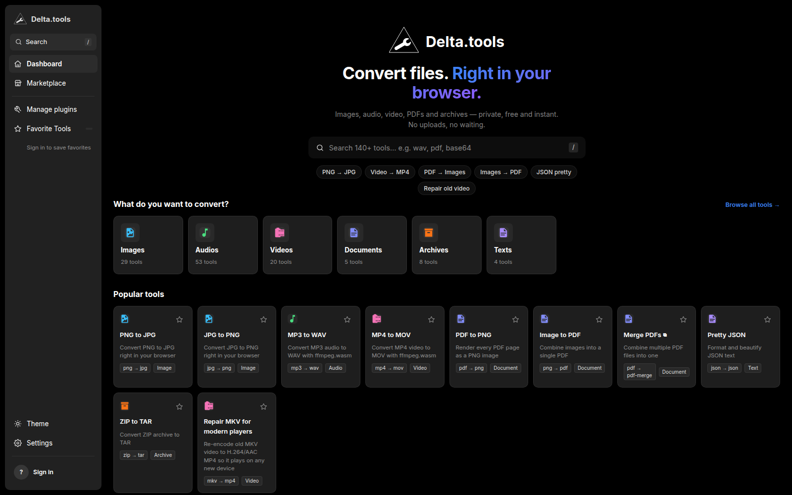
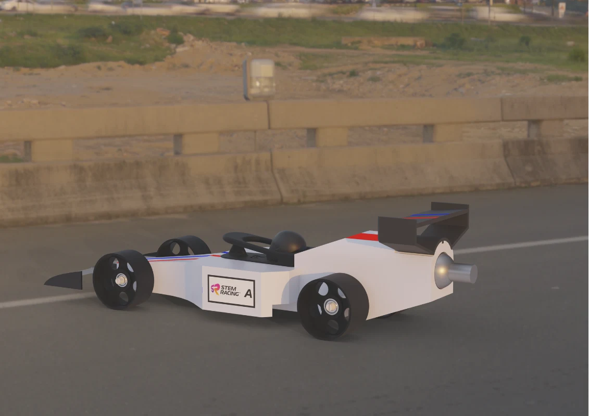
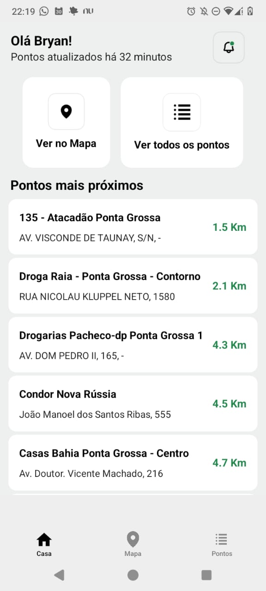
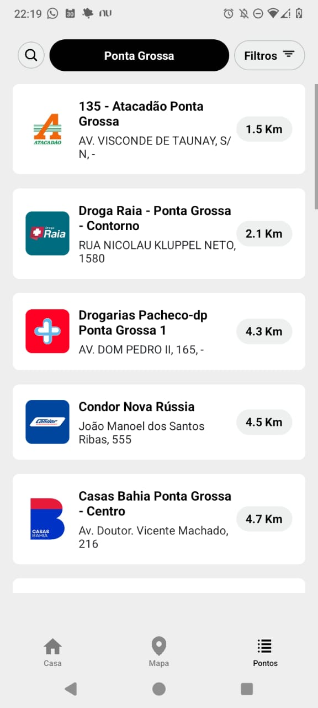
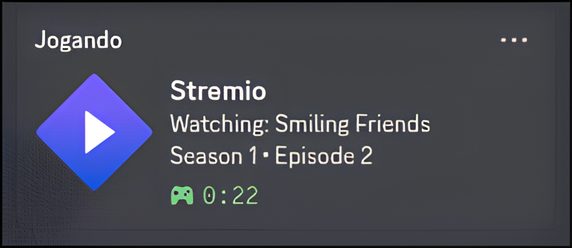

Desenvolvedor de software · Ponta Grossa, Brasil
Bryan Rafael
Bueno Ribeiro.
Sou estudante de Desenvolvimento de Sistemas no SENAI e desenvolvedor de software. Crio produtos úteis para desktop, web, mobile, APIs e sistemas.
01 / Projetos selecionados
Algumas coisas que eu construí.
Synca
Um cliente leve de sincronização com Google Drive para Linux e Windows, criado para manter pastas locais alinhadas quase em tempo real.
- Monitoramento de arquivos e sincronização bidirecional em segundo plano
- OAuth2, WebSockets e estratégias explícitas de conflito
- Builds de release e validações de CI em toda a stack
GoRustReactTauri

Delta.tools
Uma plataforma privada e sem anúncios para conversão de arquivos, com processamento no navegador e sem enviar os arquivos do usuário.
- 136 conversores integrados para imagem, mídia, PDF, arquivos e texto
- Plugins da comunidade isolados em sandbox e runtime offline-first
- Favoritos por conta, autenticação JWT e cobertura Playwright
TypeScriptViteExpressWebAssembly

SennaX Escuderia
Sou o engenheiro da SennaX, equipe que participa do STEM Racing, uma competição educacional global apoiada pela Formula 1. Contribuo para transformar conceitos em um carro de competição por meio de projeto, iteração e trabalho em equipe.
- Desenvolvimento técnico do carro para a competição STEM Racing
- Ciclo de engenharia que conecta concepção, CAD, fabricação e pista
- Render do carro produzido durante o desenvolvimento da equipe
CADEngenhariaSTEM RacingEquipe



RePlace
Um app React Native que ajuda pessoas a encontrar pontos próximos para reciclar pilhas e baterias e descartar lixo eletrônico corretamente.
React NativeExpoGoogle Maps
Ver projeto

StremioRPC
Um app desktop em Electron que transforma a atividade atual do Stremio em Rich Presence no Discord, com bandeja e inicialização automática.
ElectronNode.jsDiscord RPC
Ver projeto
Há mais para explorar: de chat em JavaFX a scanner LAN e ferramentas para jogos.
Ver todos os repositórios02 / Sobre mim
Hi, I’m Bryan.
I like building the whole thing.
Oi, eu sou o Bryan.
Gosto de construir o produto inteiro.
Sou estudante de Desenvolvimento de Sistemas no SENAI e tenho mais de cinco anos de prática com programação. Aprendo entregando: encontro uma necessidade real, escolho as ferramentas certas e levo o trabalho até algo que as pessoas possam usar.
Meus projetos passam por aplicações web, sistemas desktop, APIs, produtos mobile e ferramentas de mais baixo nível. Essa variedade me ajuda a entender todo o caminho, do que o usuário vê ao que precisa continuar confiável por trás.
- Formação
- Desenvolvimento de Sistemas · SENAI
- Localização
- Ponta Grossa · Paraná · Brasil
- Equipe
- SennaX Escuderia · STEM Racing
- Idiomas
- Português · Inglês
03 / Competências
Onde posso contribuir.
Engenharia de produto
Transformar necessidades abertas em software bem definido e utilizável, com decisões conscientes de UX.
Sistemas e desktop
Apps multiplataforma, serviços em segundo plano, arquivos, redes e integrações nativas.
Web e APIs
Interfaces responsivas e backends pragmáticos, com atenção a privacidade, testes e manutenção.
Desenvolvimento mobile
Experiências mobile úteis, construídas em torno do contexto real, mapas e interações claras.
04 / Como trabalho
Começar pelo problema do usuário01
Assumir o caminho da ideia ao release02
Tornar a complexidade compreensível03
Documentar para que outros possam continuar04
05 / Contato
Have a problem
worth solving?
Tem um problema
que vale resolver?
Estou aberto a oportunidades em desenvolvimento de software e colaborações sérias onde eu possa criar produtos úteis, aprender rápido e contribuir com um time forte.